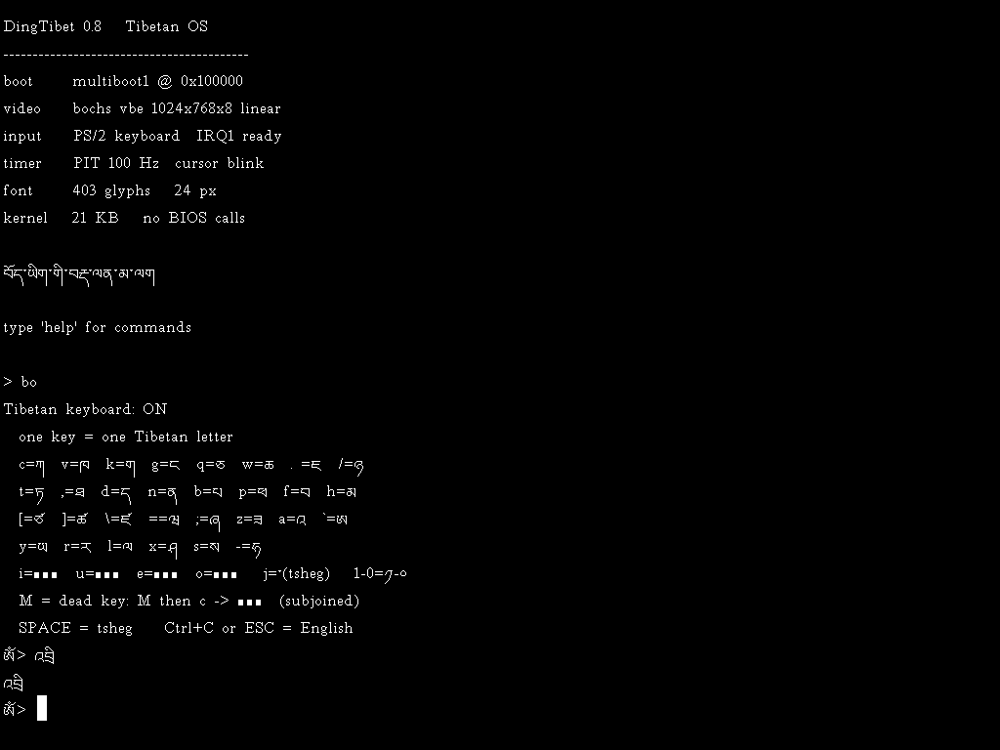
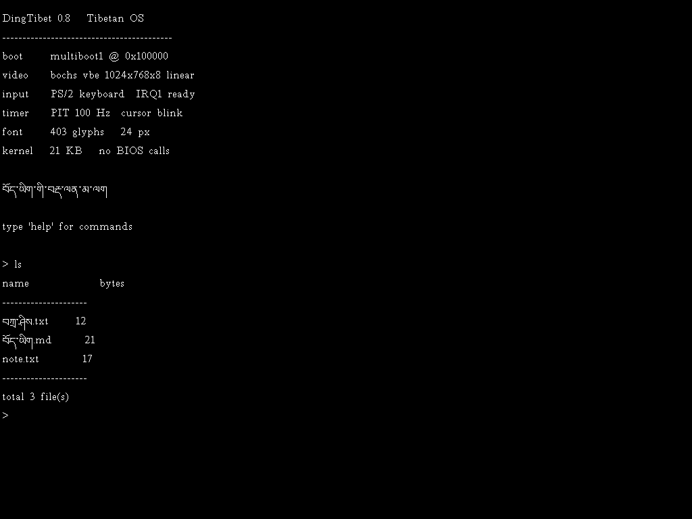
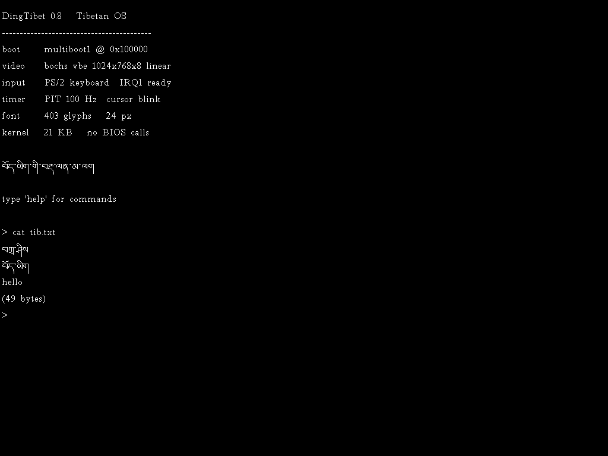
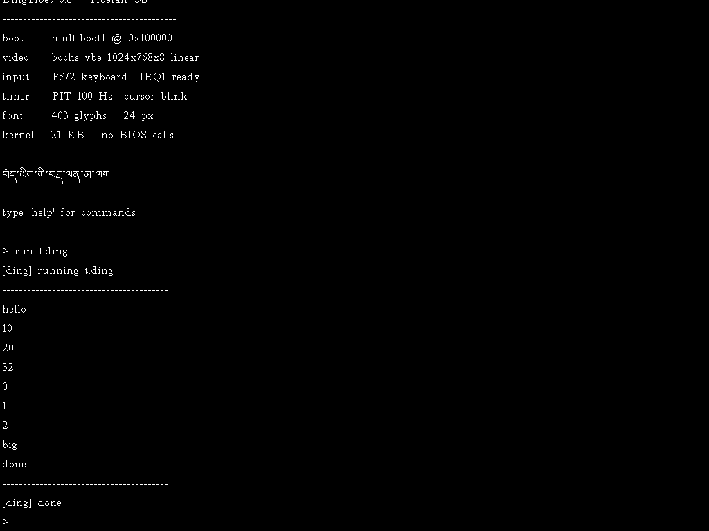

藏文有 30 个基字、4 个元音、还有上加字下加字，字符要上下堆叠。做藏文系统最难的不是翻译界面，而是字形本身。这个项目从头解决了它，然后一路做到了文件系统和编程语言。

屏幕上是 བོད་ཡིག་གི་བརྡ་ལན་མ་ལག（藏文的命令系统）。提示符 > 在英文模式，切到藏文输入会变成 ཨོཾ> —— 六字真言的第一个字。
输入、文件名、文件内容、命令、变量名 —— 没有一处需要退回英文。

ཡིག་ཆ（列文件）列出了藏文名的文件，并给每行编号，方便用编号引用。用的是微软 Windows 里的「藏文（中国）」键盘布局，一个键对应一个藏文字母。M 是死键，按完再按字母得到下加字：
# 键序 → 藏文 a f M r i → འབྲི （写 / 编辑） k M l o k → ཀློག （读） f c M r 空格 x i s → བཀྲ་ཤིས （吉祥）
空格键会智能判断：前面是完整命令时输出真空格，否则输出藏文音节点 ་。

内核里装了一个 DingLang 解释器。变量的名字可以直接写藏文：
# 在 DingTibet 里 run t.ding let བཀྲ་ཤིས = 10 let བོད་ཡིག = 32 print(བཀྲ་ཤིས * 2) let གསུམ = 3 while i < གསུམ { print(i) i = i + 1 }

| 子系统 | 实现 |
|---|---|
| 引导 | multiboot1，GRUB / QEMU -kernel 直接加载 |
| 显示 | Bochs VBE 扩展，1024×768×256 线性帧缓冲 |
| 输入 | PS/2 键盘 IRQ1，含方向键扩展扫描码 |
| 中断 | IDT + 8259 PIC 重映射 + PIT 100 Hz |
| 终端 | 黑底白字，24px，基线对齐，闪烁光标，精确退格 |
| 藏文 | 409 个字形，含 120 个辅音+元音组合 |
| 调试 | 串口 printk，支持 %s %c %d %u %x |
| 时钟 | CMOS RTC，读日期时间 |
| 磁盘 | ATA PIO，LBA28 读写 |
| 文件系统 | 自研 DIFS，能持久化，支持藏文文件名和编号引用 |
| 编辑器 | 多行编辑，藏文输入，保存到磁盘 |
| 语言 | DingLang 解释器：变量、算术、字符串、判断、循环 |
一开始是手写的引导扇区，踩了五个坑：链接地址、CHS 推进、栈指针位置、节重叠、读盘不完整。最后一个查了很久——内核只被读了 4363 字节，后面全是 0，CPU 执行到 00 00 就崩了。换成 multiboot 之后这些坑全部消失。
模式 12h 是平面式显存，四个位平面要配合 map mask、位掩码、odd/even 使用，调了很久屏幕还是全黄加竖条纹。Bochs VBE 给出线性帧缓冲，一个像素一个字节，问题立刻消失。而且帧缓冲地址是从 PCI BAR0 读出来的，不是写死的 0xE0000000 —— 新版本 QEMU 把它放在 0xFD000000，写死会直接黑屏。
这是最隐蔽的一个坑。字模是用 Windows GDI 渲染的，一开始用 CLEARTYPE_QUALITY，结果小字号的藏文全是碎片。原因是 ClearType 做的是 RGB 子像素渲染，细笔画边缘是彩色条纹，转灰度后亮度偏低，被二值化阈值当成背景丢掉了。改成 ANTIALIASED_QUALITY 并降低阈值就好了。
README.md 和代码注释里。
中途最有用的一步是加上串口输出。在这之前只能靠截图肉眼看，屏幕黑了不知道为什么、字碎了不知道为什么、多了几个字符查很久。有了 printk 之后：
$ qemu-system-i386 -kernel dingtibet.elf -serial file:serial.log
=== DingTibet booting ===
[vga] 1024x768x8 fb=0xfd000000 pitch=1024
[idt] PIC remapped, PIT 100Hz, IRQ0+IRQ1 on
[rtc] 2026-09-17 11:43:14
[fs] DIFS mounted, 3 file(s), 1 write(s)
=== type 'help' ===
后来调 DingLang 解释器也是靠它定位的：逐语句打日志，发现第 3 条语句卡住，再往 eval 里打，发现是数字输出函数里的一段浮点小数处理在内核环境里不工作。去掉就好了。
内核约 6000 行 C 与汇编，工具脚本约 3400 行 Python。
kernel/ multiboot.S multiboot 头 + 32 位入口 irq.S 中断汇编桩 vga.c Bochs VBE + PCI 找帧缓冲 idt.c IDT + PIC 重映射 + PIT keyboard.c PS/2 键盘 tibkbd.c 藏文键位表 cmos.c CMOS 实时时钟 ata.c ATA PIO 硬盘驱动 fs.c DIFS 文件系统 serial.c 串口 + printk wylie.c Wylie 转写 ← 藏文 ding.c DingLang 解释器 kernel.c 内核主体 + Shell + 编辑器 tools/ make-font.py GDI 渲染藏文字模 gen-wylie-header.py 生成 C 查表 check-glyphs.py 检查缺字
工具链只用 MinGW 的 gcc、ld、objcopy —— 不需要 nasm，不需要 make。
相关：DingLang 编程语言 · 藏语学习工具 · 全部项目
内核 97 KB · 409 个藏文字形 · 51 个坑